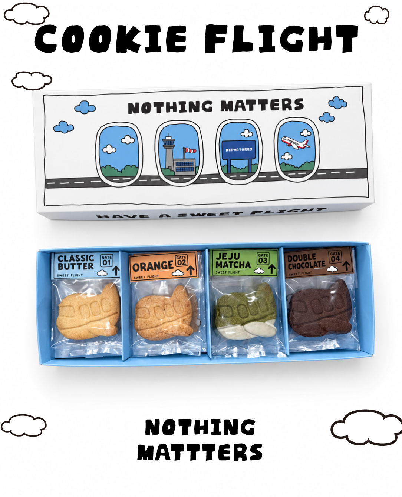
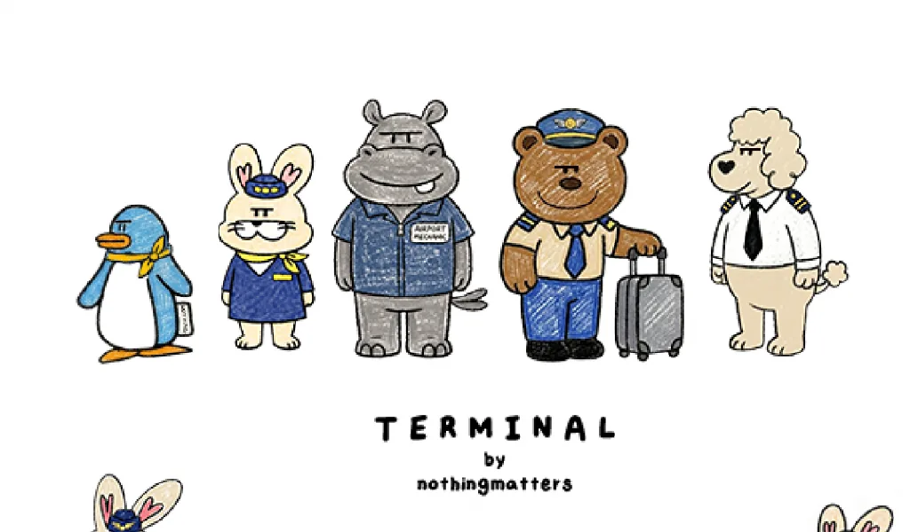

NOTHINGMATTERS · PICKUP
김포공항 가기 전,
예약한 쿠키를
픽업하세요.
쿠키를 고르고 픽업 일정을 예약한 뒤, 공항동 매장에서 수령해 주세요. 여행 출발 전 달콤한 준비를 간단하게.

COOKIE FLIGHT · PICKUP방문 전 쿠키와 픽업 일정을 먼저 예약해주세요. 매장은 김포공항 내부가 아닌 공항동에 있습니다.
HOW TO PICK UP
쿠키를 챙기는
네 가지 순서.
- 01
쿠키 선택
여행에 가져갈 쿠키를 고르세요.
- 02
픽업 예약
네이버 예약에서 픽업 일정을 확인하고 예약하세요.
- 03
공항동 매장에서 수령
확정된 일정에 맞춰 예약한 쿠키를 받아주세요.
- 04
김포공항으로 이동
쿠키와 함께 기분 좋은 여행을 시작하세요.
02 / THE COOKIE LINEUP
어떤 쿠키를
챙겨갈까요?
세 가지 여행 쿠키를 간단히 살펴보세요.
PICKUP LOCATION
공항동 매장에서
만나요.
김포공항·송정역 인근 공항동에 있습니다.
방문 전 예약을 완료해 주세요.

HAVE A SWEET FLIGHT